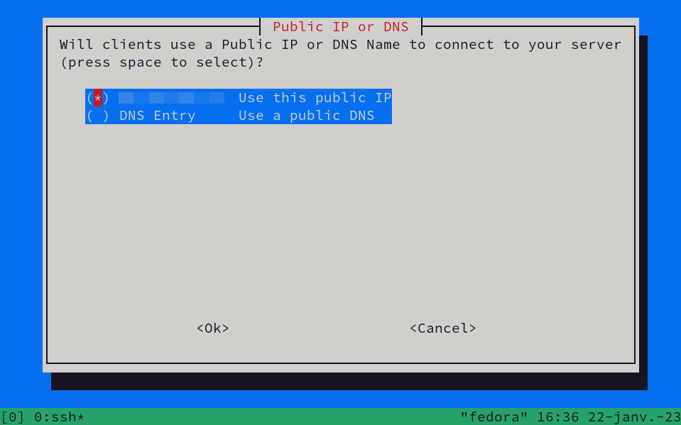
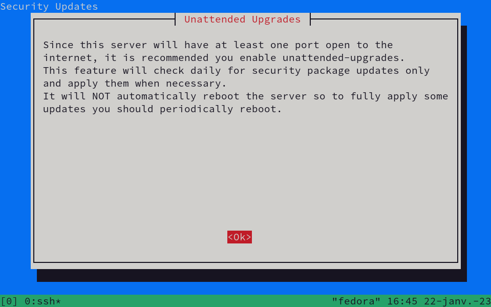

Making your own personal VPN
15 min
A Virtual Private Network (VPN) service can be handful in a great amount of different situations, such as hiding your IP adress from others, encrypting your traffic when visiting HTTP websites, or spoofing your location to use services you normally couldn't.
I will introduce you to making one; it is an easy and straightforward process. It is also a good way to learn more about Linux systems and networking.
You will need:
- a Linux server (Dedicated, VPS or Raspberry Pi)
- some basic Linux knowledge
First, you'll have to SSHSecure SHell is a protocol used to connect to remote servers securely. into your server. This can be done by using the following command:
ssh username@ip
Once you're connected, you can simply install the PiVPN script with this command:
curl -L https://install.pivpn.io | bashThis will download the script on PiVPN servers and will immediately launch it; this can take some time depending on your server's specs and internet connection. Once the script is launched, you should see this:
Continue with default settings (pressing Enter at each step) if you want a default installation. When you arrive at the following step, you will be able to choose what VPN service you prefer installing.
I recommend going with WireGuardWireGuard is a communication protocol that is free and open-source. as it is proven to be easier to use, faster, and safer than the old OpenVPN protocol. Select the one you want and continue.
At this step, you can choose to edit the default WireGuard portA port is a data connection endpoint. Ports are ranging between 0 and 65535. Most ports below 1024 are used by your system.. Do this only if you know what you are doing, as the script automatically selects a non-used port; by changing this value you could make WireGuard use a port along with another process.
Here, you can select a custom DNSDomain Name System - a naming system that associates IP addresses with domain names. provider. It will be able to see every domain you request, so choose wisely. I will go with OpenDNS.
On this screen, I recommend using your server's public IP address; to use a public DNS name, you would need a domain nameA domain name is a string used to identify a service over the Internet, i.e. google.com.
The script will ask you to enable automatic updates for your system, which is a good choice especially if you host your VPN locally; an open port can be dangerous. After this, finish the installation and reboot your system. Once it is up and running, SSH back in.
Now that PiVPN is installed, you can type this command to create a profile:
pivpn addYou will be asked to enter a name for the profile; it is at your discretion. The name should be tied to the client you will use. I'll name mine XamiPC, as I plan to use the profile on my PC. Note that a profile should only be used on one device.
Your profile is created! Now there are two options for you to use it:
📱 Android/iPhone
There is an easy way to use your profile on a phone; first, create a QR code for your profile using the following command:
pivpn -qrOne QR code will be generated. On your phone, download the WireGuard client in the Play Store/App Store, scan the QR code, enable the connection, and you're done!
💻 Computer (Windows/MacOS/Linux)
Now it's a bit trickier here, but overall straightforward. You will have to transfer the configuration file for your profile onto your computer, and then you will be able to use it. To transfer a file using the SSH protocol, we will need this command:
scp username@ip:file1 username@ip:file2It might look weird, but it will be clear once you do it. Open a new terminal and type the command; here's an example with me:
scp pi@192.168.0.10:/home/pi/configs/XamiPC.conf /home/maxime/You will be prompted for the remote user's password. Once the command is done running, the file XamiPC.conf will be transferred to /home/maxime/pivpn on the local machine.
Now that the configuration file is on your local machine, you have to install the WireGuard client. Choose your operating system and download it here.
Import the configuration file in the client and you're now connected to your own VPN service!
Great! You did it. Now, you can do the other projects!